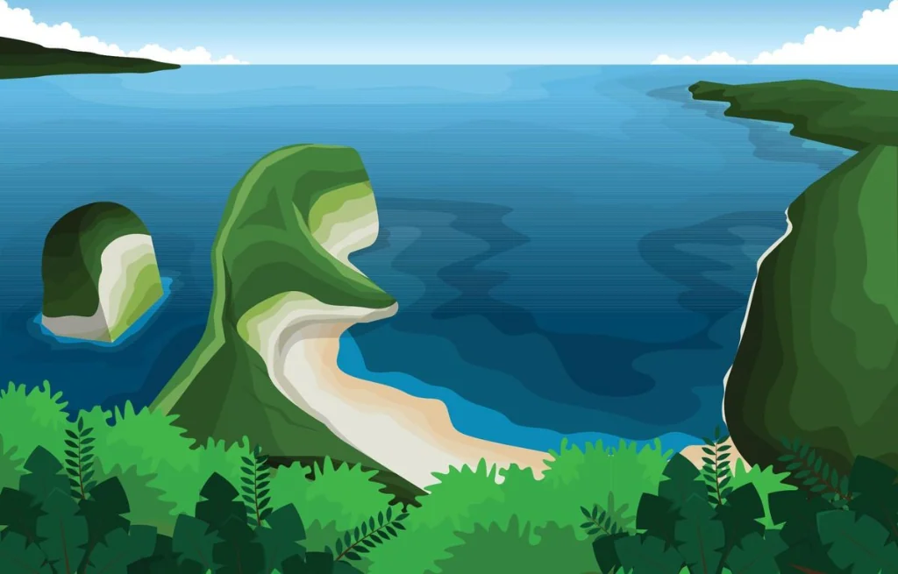
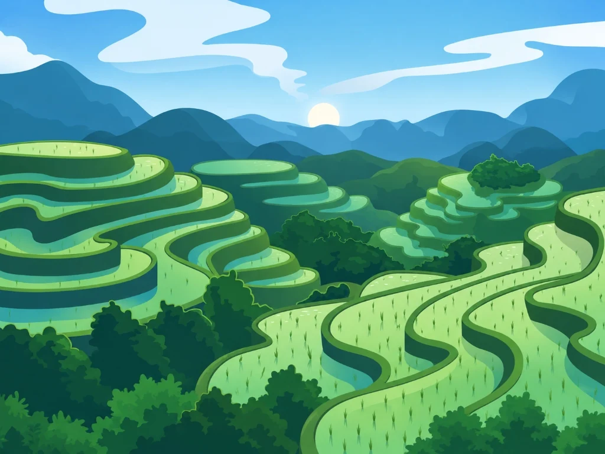
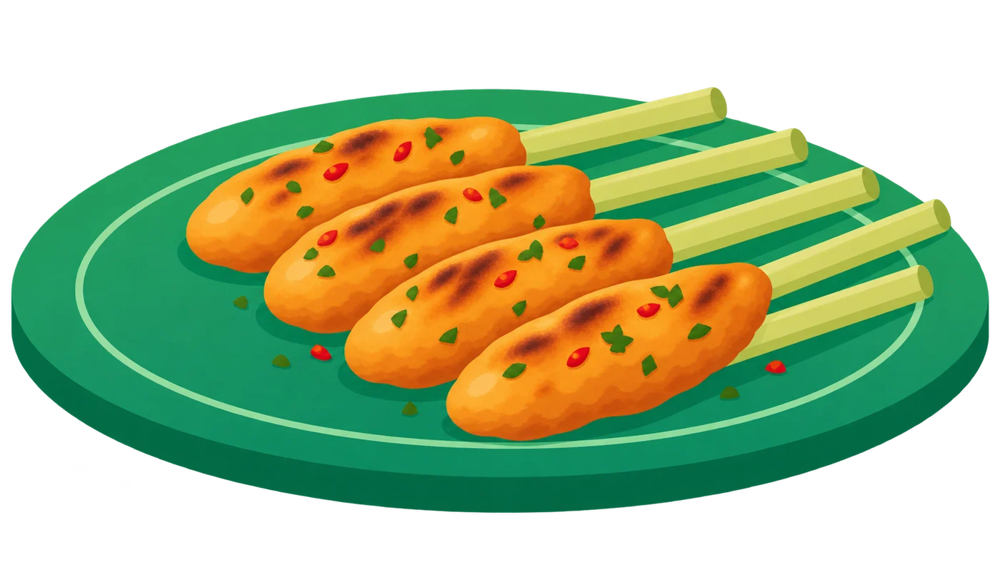
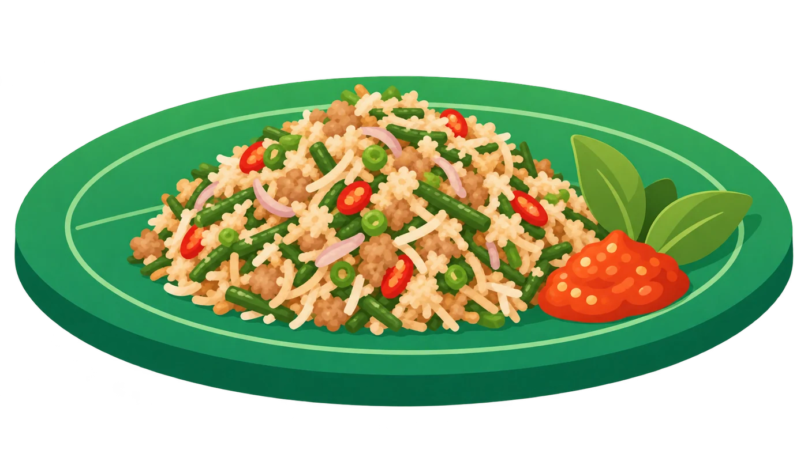
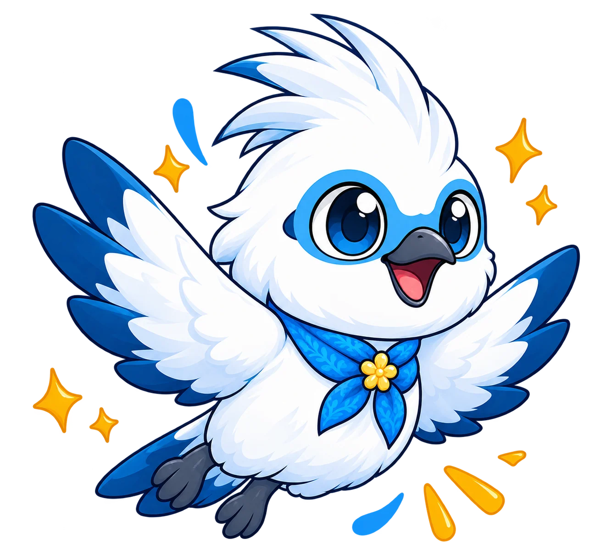

Nusa Penida

Nusa Penida
Bali, Indonesia
$ 150
/ Orang
Temukan ketenangan dan kehangatan budaya Bali bersama SAKALA, menjadikan setiap perjalanan pengalaman yang bermakna.

Dari kaldera megah Kintamani, tebing eksotis Nusa Penida, hingga kesakralan sunset tebing Uluwatu-temukan destinasi unggulan paling memikat di Pulau Bali.



Di SAKALA, kami mendedikasikan setiap langkah untuk menghubungkan Anda dengan kedalaman jiwa Bali-bukan sekadar wisata biasa, melainkan pengalaman hidup meresapi tradisi sakral, filosofi harmoni semesta, dan kehangatan tulus krama adat.
Akses eksklusif mengenal ritual sakral, filosofi pura leluhur, dan tradisi kesenian langsung bersama krama banjar adat Bali tanpa sekat komersial.
Setiap rute perjalanan dirancang menghormati keselarasan spiritual (Parahyangan), sosial kemanusiaan (Pawongan), dan kelestarian alam semesta (Palemahan).
Jelajahi kawasan sakral dengan percaya diri didampingi pemandu cerdas Manuk Jalak Bali-memahami tata krama pura, busana sembahyang, hingga cerita legenda di setiap destinasi.
Kenali lebih dalam kearifan lokal, kesakralan upacara adat, keanggunan seni tari, hingga filosofi hidup masyarakat Bali yang senantiasa menjaga keseimbangan semesta.

Di balik setiap upacara, tarian, dan simbol budaya Bali, terdapat filosofi serta nilai kehidupan Tri Hita Karana yang dijaga dari generasi ke generasi untuk merawat keharmonisan semesta.
Rasakan cita rasa khas Bali yang kaya akan rempah base genep, tradisi masak perlahan, dan kehangatan cerita di setiap hidangan warisan leluhur.

Sate Lilit Aroma Batang Serai Gurih
Lawar Tradisional Warisan Harmoni Rasa Leluhur